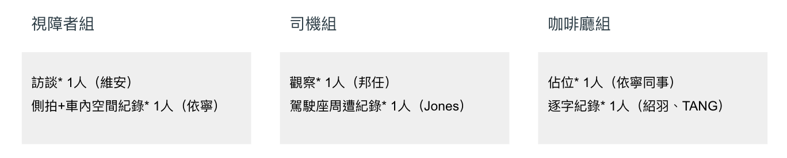
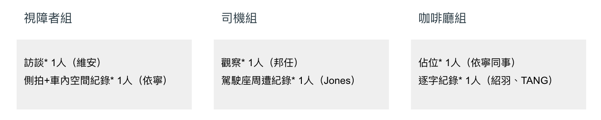

From the list: 7/2前｜用戶需求前測 ✔ Shadowing－視障者*2 Hsien-Hui T. added this on Jun 18, 2019 Completed Jul 03, 2019 by Wei-An 謝. Due on Jun 21, 2019 Assigned to Wei-An 謝. 依寧 Notes 1. 6/20 擬定訪綱、受測對象2. 6/21 約訪 Comments & Events 依寧 約訪視障者部分，我預計聯繫台灣盲人重建院(北部總院，新北市新莊區中正路384號) 、聯繫方式：(02)2998-5588。再請提供shadowing的時間與人數，謝謝^^ Jun 20, 2019 at 2:05 AM Notified 2 people Hsien-Hui Tang 唐玄輝, 總監 先兩人可以嗎？ 時間可以分開 Jun 20, 2019 at 2:06 AM Notified 2 people 依寧 沒問題唷，需要找一位先天盲、一位後天盲嗎？先前會議上有人提到兩者對於搭乘公車的想像會不太一樣，謝謝 Jun 20, 2019 at 2:10 AM Notified 2 people Wei-An 謝維安, 碩士生 好的，就先天盲、後天盲各一位，訪綱今晚應能構想完發給依寧，確定後再與受訪者約時間，謝謝！ Jun 20, 2019 at 2:22 AM Notified 2 people A-Bao, 計畫伴隨者 提案人璽帆也可以加入，但他下周時間較緊，如果是7/1或2是否OK呢?他提議和團隊一起搭公車的地點是考慮從台北市政府坐棕6到公務人員訓練處。市政府站有33條路線通過算蠻大的車站(他表示最可怕的站是台北車站忠孝站，有80條路線通過）。 Jun 21, 2019 at 10:56 PM Notified 3 people Wei-An 謝維安, 碩士生 可以的，我7/1整天可配合，7/2是預計要開會彙整調研結果。如果是7/1（ㄧ）請問依寧跟紹羽時間能否配合？另教授們若能參與，也請留言當天有空的時間。 Jun 22, 2019 at 9:29 AM Notified 3 people 依寧 我7/1可以唷！另外會再約重建中心的時間^^ ❤️ Jun 22, 2019 at 9:32 AM Notified 3 people Hsien-Hui Tang 唐玄輝, 總監 Stanley 你7/1可以參加嗎？ Jun 23, 2019 at 10:49 AM Notified 4 people Stanley, 計畫共同主持人 我7月1號 參加一個 人工智慧的研討會沒有辦法參加 Jun 23, 2019 at 10:55 AM Notified 4 people Jones Yu, 計畫共同主持人 7/1 10am-3pm我ok Jun 23, 2019 at 3:58 PM Notified 5 people 依寧 我剛與財團法人台灣盲人重建院的鄭馨儀主任聯繫上了，她表示目前單位協助對象是中途失明居多，目前沒有先天視障的朋友們。所以我先聯繫社團法人台北市視障者家長協會的王晴紋執行長，看他們那裏有沒有合適人選~暫先回報，謝謝 Jun 24, 2019 at 2:41 AM Notified 5 people Hsien-Hui Tang 唐玄輝, 總監 依寧 謝謝，所以中途失明的沒有搭公車的需求嗎？我們現在要的是有合作意願，我們之後再委托他們找受測者 Jun 24, 2019 at 2:46 AM Notified 5 people 依寧 中途失明的也有搭乘公車的需求唷，只是這部分可以跟提案人璽帆(7/1從台北市政府坐棕6到公務人員訓練處)，還是唐老師想要再找一位呢？如果需要可以聯繫先前我跟的盲人重建院郭小姐，她也是後天失明。謝謝^^ Jun 24, 2019 at 2:57 AM Notified 5 people Hsien-Hui Tang 唐玄輝, 總監 一個是七月1號2號的測試，一個是以後的測試 Jun 24, 2019 at 2:59 AM Notified 5 people Jones Yu, 計畫共同主持人 7/1 跟訪璽帆（後天全盲）ok. 建議約下午1:30跟訪（非尖峰時段），當天上午所有研究人員先集做行前確認與任務分派。@安安：請在週五前擬定跟訪計劃，方便老師們提供建議。另外再找一位先天全盲於7/2跟訪尖峰時段（上下班時間）。 收到，紹羽已經在規劃 Jun 24, 2019 at 4:57 PM Notified 5 people A-Bao, 計畫伴隨者 和璽帆約好7/1下午1:30，在臺北市府大樓一樓內的富邦銀行前會合，在大廳偏南側一些。因我當天請休無法隨行，但依寧會和各位一起同行，由她協助和璽帆的連絡。謝謝！ Jun 25, 2019 at 1:42 AM Notified 5 people A-Bao, 計畫伴隨者 璽帆手機0921914907 好的，謝謝！ Jun 25, 2019 at 1:45 AM Notified 5 people A-Bao, 計畫伴隨者 先天盲的部份有請依寧和另一名同事益樑協助，和淡江盲人資源中心上次與會的洪小姐連絡，淡江他們那裡應有北部大學就學的所有盲生資料，以及有在訓練盲人就業（例如各地方政府的1999市民服務專線接線人員）。建議計畫啟動後的測試也可與他們合作。 Jun 25, 2019 at 3:12 AM Notified 5 people Jones Yu, 計畫共同主持人 Hi all,我列了一個 User research的mindmap，可根據上面提到的重點安排跟訪計劃。 Jun 25, 2019 at 8:05 AM Notified 5 people Jones Yu, 計畫共同主持人 確認一下：7/1能參加的人有維安、依寧、紹羽、邦任和我？另外，我剛查了棕6（固定班次），隸屬欣欣客運，坐到公務人員訓練處後，要搭回程的路線選擇很少，我建議第一次 shadowing 能更換站點，路線選擇之考量如下： 以首都客運為主，第一趟（市政府 to X）採電話預約流程，屆時派一人至行控中心同步觀察與訪談。另兩人 (司機組) 在前一站先上公車 (A車)，一人近身觀察司機與車機、另一人記錄車內空間及靠站時前車窗影像（站亭位置與候車狀況）；再兩人 (視障者組) 跟視障者在站亭候車，觀察視障者如何等車、記錄站亭環境以及其他搭車者反應。 站點距離不需太長，約三至四站即可，方便進行第二趟（X to 市政府），不預約，選另一班舉牌候車 (B車)，一樣派兩人至前一站上車。 選擇路線的站點間距離不會太遠，方便司機組到前一站等候，或者司機沒有載到視障者時，方便下車再坐回兩站之前。 結束後在市政府會議室或咖啡廳訪談。 請維安紹羽幫忙survey 合適路線及 A, B 號公車。 Jun 25, 2019 at 4:43 PM Notified 5 people A-Bao, 計畫伴隨者 可以提前先和璽帆說一下可能的改變及整個流程嗎？以及這樣是否仍和他先在原訂時間碰面，再開始走流程呢？ Jun 25, 2019 at 9:23 PM Notified 5 people Jones Yu, 計畫共同主持人 當然，待路線確定後我們再通知！ Jun 26, 2019 at 12:31 AM Notified 5 people Jones Yu, 計畫共同主持人 昨天忘了說： 7/1安排的路線最好有一條是受測者常搭乘的，這部分請先與璽帆詢問他常搭的路線（公車、起迄站、是否以電話預約），再做篩選與安排。 Jun 26, 2019 at 3:23 AM Notified 5 people Wei-An 謝維安, 碩士生 好的，我跟紹羽討論過流程，微調如下：行控中心組：訪談 1人司機組：觀察 1人、駕駛座周遭紀錄 1人視障者組：訪談 1人、側拍+車內空間紀錄 1人流程： 第一趟（市政府 to X）採電話預約流程，屆時派一人至行控中心同步觀察與訪談。另兩人 (司機組) 在前五站先上公車 (A車)，一人近身觀察司機與車機、另一人記錄車內空間及靠站時前車窗影像（站亭位置與候車狀況）；再兩人 (視障者組) 跟視障者在站亭候車，觀察視障者如何等車、記錄站亭環境以及其他搭車者反應。 站點距離不需太長，約15分鐘車程（註1）即可，進行第二趟（X to 市政府），不預約，選另一班舉牌候車 (B車)，司機組一樣在前一站上車。 選擇路線的站點間距離不會太遠，方便司機組到前一站等候，或者司機沒有載到視障者時，方便下車再坐回兩站之前。 結束後在市政府會議室或咖啡廳做第二趟後訪。 時間表：13:30 行控中心組開始訪談至結束 視障者組與璽帆會面，基本背景訪完後，預約公車 司機組在前五站處待命，等待視障者組回報公車第一趟上車後 視障者組訪談 司機組觀察，早一站下車待命下車後 視障者組陪同候車等待司機組回報公車 司機組候車第二趟上車後 視障者組訪談 司機組觀察下車後 視障者組訪談 註1：上車後可能有一些突發狀況，也會請視障者站/坐定後針對剛剛預約上車過程訪談，訪完後也要專注觀察他的下車流程，故時間抓15分鐘，約10站距離。Q1：司機組在司機執勤時的觀察可能有限， Jones 比較想了解哪些面向？如果要問到司機想法，可能要請依寧幫忙爭取載完旅客後的短暫訪談，或是另找非執勤時段以過去經驗訪問。如果流程無誤，就再請 依寧 幫忙問一下璽帆從市政府站常搭乘的首都客運路線，安排大概15分鐘的車程。 我先丟訊息給他了。 但方便明天請維安打給他說流程嗎? Jun 26, 2019 at 3:56 AM Notified 5 people Jones Yu, 計畫共同主持人 Wei-An : 請把 7/1 跟訪流程以附件方式表示 https://docs.google.com/presentation/d/1cXq3eyCcA1lttlPFicvVQBF3xeZgsBZeH3XE_pHYz1A/edit?usp=sharing今天(6/26) 3:30左右可call我討論細節。 請問老師電話幾號呢？ Jun 26, 2019 at 4:44 AM Notified 5 people Jones Yu, 計畫共同主持人 建議7/1 提前1.5hrs (12pm) 在市政府集合，進行跟訪前的準備工作。請大家當日提前用餐。 Wei-An 請在附近找適合討論的場地 (誠品Starbucks? ) 依寧 : 請問首都行控中心地點也在 新北市蘆洲區復興路323巷188號之1 嗎？若在蘆洲，行控中心組需要先行前往，屆時需請 Dennis 和你一起去。 Stanley : 7/1你的學生會一起參加shadowing 嗎？若沒有，我再找其他同學幫忙。 收到！ Jun 26, 2019 at 5:06 AM Notified 6 people Hsien-Hui Tang 唐玄輝, 總監 可能要思考一下過程要如何用錄影紀錄，go pro ？Jones Yu (Basecamp) <notifications@3.basecamp.com (mailto:notifications@3.basecamp.com)>於 2019年6月26日 週三，下午1:06寫道：建議7/1 提前1.5hrs (12pm) 在市政府集合，進行跟訪前的準備工作。請大家當日提前用餐。 Wei-An 請在附近找適合討論的場地 (誠品Starbucks? )依寧 : 請問首都行控中心地點也在 新北市蘆洲區復興路323巷188號 (https://www.google.com/maps/search/%E6%96%B0%E5%8C%97%E5%B8%82%E8%98%86%E6%B4%B2%E5%8D%80%E5%BE%A9%E8%88%88%E8%B7%AF323%E5%B7%B7188%E8%99%9F?entry=gmail&source=g)之1 嗎？若在蘆洲，行控中心組需要先行前往，屆時需請 Dennis 和你一起去。Stanley : 7/1你的學生會一起參加shadowing 嗎？若沒有，我再找其他同學幫忙。You can reply to this email or respond in Basecamp (https://3.basecamp.com/3127495/buckets/12481328/todos/1868242935#__recording_1885197974). This message was sent to A-Bao, Dennis Wang, Hsien-Hui Tang 唐玄輝, Jones Yu, Stanley, Wei-An 謝維安, and 依寧. Unsubscribe (https://3.basecamp.com/3127495/buckets/12481328/recordings/1868242935/unsubscribe/BAh7CEkiCGdpZAY6BkVUSSIaZ2lkOi8vYmMzL1VzZXIvMjMyNTE0BjsAVEkiDHB1cnBvc2UGOwBUSSIMZGVmYXVsdAY7AFRJIg9leHBpcmVzX2F0BjsAVEkiHTIwMTktMDctMjZUMDU6MDY6MDUuNTMzWgY7AFQ=--a0b058c55f9c5aff46de1cf880345e7b56e83495) • Change your notification settings (https://3.basecamp.com/3127495/my/notifications/settings) Get the Basecamp app for iPhone or Android! Jun 26, 2019 at 5:13 AM Notified 6 people Jones Yu, 計畫共同主持人 沒錯，請 Wei-An 把記錄方式與需使用的器材一起註記在 google slide中。我這裡有一台 OSMO pocket & GoPro Hero 5，唐老師那裡有哪些設備？我們盤點給同學當天借用。 Jun 26, 2019 at 5:17 AM Notified 6 people Hsien-Hui Tang 唐玄輝, 總監 如果缺設備就買吧看缺什麼把東西列一下我來處理 Jun 26, 2019 at 5:19 AM Notified 6 people 依寧 首都行控中心地點是在 新北市蘆洲區復興路323巷188號 ，沒錯唷！也是首都的總站 Jun 26, 2019 at 2:01 PM Notified 6 people Stanley, 計畫共同主持人 Nicole 請問你7/1可以過去嗎？請問何時要去首度客運？那個我也想去了解一下XD 7/1 沒辦法😭 Jun 26, 2019 at 2:30 PM Notified 7 people Hsien-Hui Tang 唐玄輝, 總監 我們沒有go pro只有攝影機 Jun 26, 2019 at 2:30 PM Notified 7 people Wei-An 謝維安, 碩士生 Stanley 就是行控中心唷，也會在7/1，預計是13:30，訪綱的時間表確認後會再請依寧幫忙聯絡 Jun 26, 2019 at 3:01 PM Notified 7 people Stanley, 計畫共同主持人 好吧那我真的無法，只能以後再去了 Jun 26, 2019 at 3:50 PM Notified 7 people Wei-An 謝維安, 碩士生 已再次跟璽帆通話過，綜合昨日與Jones討論的內容，整理更新文件如下前測執行文件：https://docs.google.com/presentation/d/1pV2eJddMIFe9x5eAA9gRpQLx4WVGLxpg9JkVFnxGM3w/edit#slide=id.g5c41a58cce_0_0請留意路線目前來回程預計搭乘不同班公車（但仍有風險，我盡量找備案多一點的站點了）並有記載司機組與視障者組之間工作搭配，請 Jones Hsien-Hui Stanley 協助定稿，確認執行細節後會由 Shaoyu 幫忙再修正訪綱。 Jun 28, 2019 at 8:22 AM Notified 8 people Dennis Wang 邦任, grad student 想請問，關於 0701 同步執行的行控中心觀察與訪談，先前跟 Jones 討論到於行控中心同步接乘客預約電話的可能，請問預約這段會有辦法在乘客組部分進行嗎？ Jun 28, 2019 at 8:50 AM Notified 8 people Wei-An 謝維安, 碩士生 喔喔，訊息沒同步到，更新一下為何不訪談行控中心的原因：研究路線時打給首都客運，才了解到首都客運的台北市公車沒有預約服務，是要新北的路線才有，可能是因為班次較少或其他原因（未深究）。且璽帆說他在後天失明後接受視障訓練時從沒聽說過公車的預約服務，更沒使用過。考量至此決定請璽帆搭常用路線即可，首都客運行控中心的訪談就跟此次訪談直接脫勾分開研究。 Jun 28, 2019 at 8:55 AM Notified 8 people Dennis Wang 邦任, grad student 了解！所以週一還會進行行控中心訪談嗎？若無，我要加入視障者組協助嗎？ Jun 28, 2019 at 9:09 AM Notified 8 people Hsien-Hui Tang 唐玄輝, 總監 可參加 Jun 28, 2019 at 9:22 AM Notified 8 people Wei-An 謝維安, 碩士生 這是清點7/1當天可以出席的人後，初步做的人力配置：目前由跟璽帆接觸過的我跟 依寧 負責視障者組， Dennis 與 Jones 負責觀察司機組（私下側拍），還有回到市政府做後訪的咖啡廳組，由 Shaoyu 即時逐字紀錄，並請 Hsien-Hui 遠端指揮一下XD考量 Dennis 可能也要深入了解視障者需求，有需要的話可以跟我互換工作內容，不過訪綱因應昨天路線變動，會需要再跟紹羽與我三方同步一下～  螢幕快照 2019-06-29 下午3.28.19.png 51.8 KB • Download 收到！ Jun 29, 2019 at 7:34 AM Notified 8 people Wei-An 謝維安 completed this to-do. Jul 03, 2019 at 6:29 AM
依寧 約訪視障者部分，我預計聯繫台灣盲人重建院(北部總院，新北市新莊區中正路384號) 、聯繫方式：(02)2998-5588。再請提供shadowing的時間與人數，謝謝^^ Jun 20, 2019 at 2:05 AM Notified 2 people
Wei-An 謝維安, 碩士生 好的，就先天盲、後天盲各一位，訪綱今晚應能構想完發給依寧，確定後再與受訪者約時間，謝謝！ Jun 20, 2019 at 2:22 AM Notified 2 people
A-Bao, 計畫伴隨者 提案人璽帆也可以加入，但他下周時間較緊，如果是7/1或2是否OK呢?他提議和團隊一起搭公車的地點是考慮從台北市政府坐棕6到公務人員訓練處。市政府站有33條路線通過算蠻大的車站(他表示最可怕的站是台北車站忠孝站，有80條路線通過）。 Jun 21, 2019 at 10:56 PM Notified 3 people
Wei-An 謝維安, 碩士生 可以的，我7/1整天可配合，7/2是預計要開會彙整調研結果。如果是7/1（ㄧ）請問依寧跟紹羽時間能否配合？另教授們若能參與，也請留言當天有空的時間。 Jun 22, 2019 at 9:29 AM Notified 3 people
依寧 我剛與財團法人台灣盲人重建院的鄭馨儀主任聯繫上了，她表示目前單位協助對象是中途失明居多，目前沒有先天視障的朋友們。所以我先聯繫社團法人台北市視障者家長協會的王晴紋執行長，看他們那裏有沒有合適人選~暫先回報，謝謝 Jun 24, 2019 at 2:41 AM Notified 5 people
Hsien-Hui Tang 唐玄輝, 總監 依寧 謝謝，所以中途失明的沒有搭公車的需求嗎？我們現在要的是有合作意願，我們之後再委托他們找受測者 Jun 24, 2019 at 2:46 AM Notified 5 people
依寧 中途失明的也有搭乘公車的需求唷，只是這部分可以跟提案人璽帆(7/1從台北市政府坐棕6到公務人員訓練處)，還是唐老師想要再找一位呢？如果需要可以聯繫先前我跟的盲人重建院郭小姐，她也是後天失明。謝謝^^ Jun 24, 2019 at 2:57 AM Notified 5 people
Jones Yu, 計畫共同主持人 7/1 跟訪璽帆（後天全盲）ok. 建議約下午1:30跟訪（非尖峰時段），當天上午所有研究人員先集做行前確認與任務分派。@安安：請在週五前擬定跟訪計劃，方便老師們提供建議。另外再找一位先天全盲於7/2跟訪尖峰時段（上下班時間）。 收到，紹羽已經在規劃 Jun 24, 2019 at 4:57 PM Notified 5 people
A-Bao, 計畫伴隨者 和璽帆約好7/1下午1:30，在臺北市府大樓一樓內的富邦銀行前會合，在大廳偏南側一些。因我當天請休無法隨行，但依寧會和各位一起同行，由她協助和璽帆的連絡。謝謝！ Jun 25, 2019 at 1:42 AM Notified 5 people
A-Bao, 計畫伴隨者 先天盲的部份有請依寧和另一名同事益樑協助，和淡江盲人資源中心上次與會的洪小姐連絡，淡江他們那裡應有北部大學就學的所有盲生資料，以及有在訓練盲人就業（例如各地方政府的1999市民服務專線接線人員）。建議計畫啟動後的測試也可與他們合作。 Jun 25, 2019 at 3:12 AM Notified 5 people
Jones Yu, 計畫共同主持人 Hi all,我列了一個 User research的mindmap，可根據上面提到的重點安排跟訪計劃。 Jun 25, 2019 at 8:05 AM Notified 5 people
Jones Yu, 計畫共同主持人 確認一下：7/1能參加的人有維安、依寧、紹羽、邦任和我？另外，我剛查了棕6（固定班次），隸屬欣欣客運，坐到公務人員訓練處後，要搭回程的路線選擇很少，我建議第一次 shadowing 能更換站點，路線選擇之考量如下： 以首都客運為主，第一趟（市政府 to X）採電話預約流程，屆時派一人至行控中心同步觀察與訪談。另兩人 (司機組) 在前一站先上公車 (A車)，一人近身觀察司機與車機、另一人記錄車內空間及靠站時前車窗影像（站亭位置與候車狀況）；再兩人 (視障者組) 跟視障者在站亭候車，觀察視障者如何等車、記錄站亭環境以及其他搭車者反應。 站點距離不需太長，約三至四站即可，方便進行第二趟（X to 市政府），不預約，選另一班舉牌候車 (B車)，一樣派兩人至前一站上車。 選擇路線的站點間距離不會太遠，方便司機組到前一站等候，或者司機沒有載到視障者時，方便下車再坐回兩站之前。 結束後在市政府會議室或咖啡廳訪談。 請維安紹羽幫忙survey 合適路線及 A, B 號公車。 Jun 25, 2019 at 4:43 PM Notified 5 people
A-Bao, 計畫伴隨者 可以提前先和璽帆說一下可能的改變及整個流程嗎？以及這樣是否仍和他先在原訂時間碰面，再開始走流程呢？ Jun 25, 2019 at 9:23 PM Notified 5 people
Jones Yu, 計畫共同主持人 昨天忘了說： 7/1安排的路線最好有一條是受測者常搭乘的，這部分請先與璽帆詢問他常搭的路線（公車、起迄站、是否以電話預約），再做篩選與安排。 Jun 26, 2019 at 3:23 AM Notified 5 people
Wei-An 謝維安, 碩士生 好的，我跟紹羽討論過流程，微調如下：行控中心組：訪談 1人司機組：觀察 1人、駕駛座周遭紀錄 1人視障者組：訪談 1人、側拍+車內空間紀錄 1人流程： 第一趟（市政府 to X）採電話預約流程，屆時派一人至行控中心同步觀察與訪談。另兩人 (司機組) 在前五站先上公車 (A車)，一人近身觀察司機與車機、另一人記錄車內空間及靠站時前車窗影像（站亭位置與候車狀況）；再兩人 (視障者組) 跟視障者在站亭候車，觀察視障者如何等車、記錄站亭環境以及其他搭車者反應。 站點距離不需太長，約15分鐘車程（註1）即可，進行第二趟（X to 市政府），不預約，選另一班舉牌候車 (B車)，司機組一樣在前一站上車。 選擇路線的站點間距離不會太遠，方便司機組到前一站等候，或者司機沒有載到視障者時，方便下車再坐回兩站之前。 結束後在市政府會議室或咖啡廳做第二趟後訪。 時間表：13:30 行控中心組開始訪談至結束 視障者組與璽帆會面，基本背景訪完後，預約公車 司機組在前五站處待命，等待視障者組回報公車第一趟上車後 視障者組訪談 司機組觀察，早一站下車待命下車後 視障者組陪同候車等待司機組回報公車 司機組候車第二趟上車後 視障者組訪談 司機組觀察下車後 視障者組訪談 註1：上車後可能有一些突發狀況，也會請視障者站/坐定後針對剛剛預約上車過程訪談，訪完後也要專注觀察他的下車流程，故時間抓15分鐘，約10站距離。Q1：司機組在司機執勤時的觀察可能有限， Jones 比較想了解哪些面向？如果要問到司機想法，可能要請依寧幫忙爭取載完旅客後的短暫訪談，或是另找非執勤時段以過去經驗訪問。如果流程無誤，就再請 依寧 幫忙問一下璽帆從市政府站常搭乘的首都客運路線，安排大概15分鐘的車程。 我先丟訊息給他了。 但方便明天請維安打給他說流程嗎? Jun 26, 2019 at 3:56 AM Notified 5 people
Jones Yu, 計畫共同主持人 Wei-An : 請把 7/1 跟訪流程以附件方式表示 https://docs.google.com/presentation/d/1cXq3eyCcA1lttlPFicvVQBF3xeZgsBZeH3XE_pHYz1A/edit?usp=sharing今天(6/26) 3:30左右可call我討論細節。 請問老師電話幾號呢？ Jun 26, 2019 at 4:44 AM Notified 5 people
Jones Yu, 計畫共同主持人 建議7/1 提前1.5hrs (12pm) 在市政府集合，進行跟訪前的準備工作。請大家當日提前用餐。 Wei-An 請在附近找適合討論的場地 (誠品Starbucks? ) 依寧 : 請問首都行控中心地點也在 新北市蘆洲區復興路323巷188號之1 嗎？若在蘆洲，行控中心組需要先行前往，屆時需請 Dennis 和你一起去。 Stanley : 7/1你的學生會一起參加shadowing 嗎？若沒有，我再找其他同學幫忙。 收到！ Jun 26, 2019 at 5:06 AM Notified 6 people
Hsien-Hui Tang 唐玄輝, 總監 可能要思考一下過程要如何用錄影紀錄，go pro ？Jones Yu (Basecamp) <notifications@3.basecamp.com (mailto:notifications@3.basecamp.com)>於 2019年6月26日 週三，下午1:06寫道：建議7/1 提前1.5hrs (12pm) 在市政府集合，進行跟訪前的準備工作。請大家當日提前用餐。 Wei-An 請在附近找適合討論的場地 (誠品Starbucks? )依寧 : 請問首都行控中心地點也在 新北市蘆洲區復興路323巷188號 (https://www.google.com/maps/search/%E6%96%B0%E5%8C%97%E5%B8%82%E8%98%86%E6%B4%B2%E5%8D%80%E5%BE%A9%E8%88%88%E8%B7%AF323%E5%B7%B7188%E8%99%9F?entry=gmail&source=g)之1 嗎？若在蘆洲，行控中心組需要先行前往，屆時需請 Dennis 和你一起去。Stanley : 7/1你的學生會一起參加shadowing 嗎？若沒有，我再找其他同學幫忙。You can reply to this email or respond in Basecamp (https://3.basecamp.com/3127495/buckets/12481328/todos/1868242935#__recording_1885197974). This message was sent to A-Bao, Dennis Wang, Hsien-Hui Tang 唐玄輝, Jones Yu, Stanley, Wei-An 謝維安, and 依寧. Unsubscribe (https://3.basecamp.com/3127495/buckets/12481328/recordings/1868242935/unsubscribe/BAh7CEkiCGdpZAY6BkVUSSIaZ2lkOi8vYmMzL1VzZXIvMjMyNTE0BjsAVEkiDHB1cnBvc2UGOwBUSSIMZGVmYXVsdAY7AFRJIg9leHBpcmVzX2F0BjsAVEkiHTIwMTktMDctMjZUMDU6MDY6MDUuNTMzWgY7AFQ=--a0b058c55f9c5aff46de1cf880345e7b56e83495) • Change your notification settings (https://3.basecamp.com/3127495/my/notifications/settings) Get the Basecamp app for iPhone or Android! Jun 26, 2019 at 5:13 AM Notified 6 people
Jones Yu, 計畫共同主持人 沒錯，請 Wei-An 把記錄方式與需使用的器材一起註記在 google slide中。我這裡有一台 OSMO pocket & GoPro Hero 5，唐老師那裡有哪些設備？我們盤點給同學當天借用。 Jun 26, 2019 at 5:17 AM Notified 6 people
Stanley, 計畫共同主持人 Nicole 請問你7/1可以過去嗎？請問何時要去首度客運？那個我也想去了解一下XD 7/1 沒辦法😭 Jun 26, 2019 at 2:30 PM Notified 7 people
Wei-An 謝維安, 碩士生 Stanley 就是行控中心唷，也會在7/1，預計是13:30，訪綱的時間表確認後會再請依寧幫忙聯絡 Jun 26, 2019 at 3:01 PM Notified 7 people
Wei-An 謝維安, 碩士生 已再次跟璽帆通話過，綜合昨日與Jones討論的內容，整理更新文件如下前測執行文件：https://docs.google.com/presentation/d/1pV2eJddMIFe9x5eAA9gRpQLx4WVGLxpg9JkVFnxGM3w/edit#slide=id.g5c41a58cce_0_0請留意路線目前來回程預計搭乘不同班公車（但仍有風險，我盡量找備案多一點的站點了）並有記載司機組與視障者組之間工作搭配，請 Jones Hsien-Hui Stanley 協助定稿，確認執行細節後會由 Shaoyu 幫忙再修正訪綱。 Jun 28, 2019 at 8:22 AM Notified 8 people
Dennis Wang 邦任, grad student 想請問，關於 0701 同步執行的行控中心觀察與訪談，先前跟 Jones 討論到於行控中心同步接乘客預約電話的可能，請問預約這段會有辦法在乘客組部分進行嗎？ Jun 28, 2019 at 8:50 AM Notified 8 people
Wei-An 謝維安, 碩士生 喔喔，訊息沒同步到，更新一下為何不訪談行控中心的原因：研究路線時打給首都客運，才了解到首都客運的台北市公車沒有預約服務，是要新北的路線才有，可能是因為班次較少或其他原因（未深究）。且璽帆說他在後天失明後接受視障訓練時從沒聽說過公車的預約服務，更沒使用過。考量至此決定請璽帆搭常用路線即可，首都客運行控中心的訪談就跟此次訪談直接脫勾分開研究。 Jun 28, 2019 at 8:55 AM Notified 8 people
Dennis Wang 邦任, grad student 了解！所以週一還會進行行控中心訪談嗎？若無，我要加入視障者組協助嗎？ Jun 28, 2019 at 9:09 AM Notified 8 people
Wei-An 謝維安, 碩士生 這是清點7/1當天可以出席的人後，初步做的人力配置：目前由跟璽帆接觸過的我跟 依寧 負責視障者組， Dennis 與 Jones 負責觀察司機組（私下側拍），還有回到市政府做後訪的咖啡廳組，由 Shaoyu 即時逐字紀錄，並請 Hsien-Hui 遠端指揮一下XD考量 Dennis 可能也要深入了解視障者需求，有需要的話可以跟我互換工作內容，不過訪綱因應昨天路線變動，會需要再跟紹羽與我三方同步一下～  螢幕快照 2019-06-29 下午3.28.19.png 51.8 KB • Download 收到！ Jun 29, 2019 at 7:34 AM Notified 8 people
 Wei-An 謝.
Wei-An 謝.
 依寧
依寧
另外再找一位先天全盲於7/2跟訪尖峰時段（上下班時間）。
我列了一個 User research的mindmap，可根據上面提到的重點安排跟訪計劃。
另外，我剛查了棕6（固定班次），隸屬欣欣客運，坐到公務人員訓練處後，要搭回程的路線選擇很少，我建議第一次 shadowing 能更換站點，路線選擇之考量如下：
行控中心組：訪談 1人
司機組：觀察 1人、駕駛座周遭紀錄 1人
視障者組：訪談 1人、側拍+車內空間紀錄 1人
流程：
時間表：
13:30 行控中心組開始訪談至結束
視障者組與璽帆會面，基本背景訪完後，預約公車
司機組在前五站處待命，等待視障者組回報公車
第一趟上車後 視障者組訪談
司機組觀察，早一站下車待命
下車後 視障者組陪同候車等待司機組回報公車
司機組候車
第二趟上車後 視障者組訪談
司機組觀察
下車後 視障者組訪談
註1：上車後可能有一些突發狀況，也會請視障者站/坐定後針對剛剛預約上車過程訪談，訪完後也要專注觀察他的下車流程，故時間抓15分鐘，約10站距離。
Q1：司機組在司機執勤時的觀察可能有限，
如果流程無誤，就再請
今天(6/26) 3:30左右可call我討論細節。
Jones Yu (Basecamp) <notifications@3.basecamp.com (mailto:notifications@3.basecamp.com)>於 2019年6月26日 週三，下午1:06寫道：
建議7/1 提前1.5hrs (12pm) 在市政府集合，進行跟訪前的準備工作。請大家當日提前用餐。 Wei-An 請在附近找適合討論的場地 (誠品Starbucks? )
依寧 : 請問首都行控中心地點也在 新北市蘆洲區復興路323巷188號 (https://www.google.com/maps/search/%E6%96%B0%E5%8C%97%E5%B8%82%E8%98%86%E6%B4%B2%E5%8D%80%E5%BE%A9%E8%88%88%E8%B7%AF323%E5%B7%B7188%E8%99%9F?entry=gmail&source=g)之1 嗎？若在蘆洲，行控中心組需要先行前往，屆時需請 Dennis 和你一起去。
Stanley : 7/1你的學生會一起參加shadowing 嗎？若沒有，我再找其他同學幫忙。
You can reply to this email or respond in Basecamp (https://3.basecamp.com/3127495/buckets/12481328/todos/1868242935#__recording_1885197974). This message was sent to A-Bao, Dennis Wang, Hsien-Hui Tang 唐玄輝, Jones Yu, Stanley, Wei-An 謝維安, and 依寧. Unsubscribe (https://3.basecamp.com/3127495/buckets/12481328/recordings/1868242935/unsubscribe/BAh7CEkiCGdpZAY6BkVUSSIaZ2lkOi8vYmMzL1VzZXIvMjMyNTE0BjsAVEkiDHB1cnBvc2UGOwBUSSIMZGVmYXVsdAY7AFRJIg9leHBpcmVzX2F0BjsAVEkiHTIwMTktMDctMjZUMDU6MDY6MDUuNTMzWgY7AFQ=--a0b058c55f9c5aff46de1cf880345e7b56e83495) • Change your notification settings (https://3.basecamp.com/3127495/my/notifications/settings) Get the Basecamp app for iPhone or Android!
看缺什麼把東西列一下我來處理
也是首都的總站
請問何時要去首度客運？那個我也想去了解一下XD
前測執行文件：https://docs.google.com/presentation/d/1pV2eJddMIFe9x5eAA9gRpQLx4WVGLxpg9JkVFnxGM3w/edit#slide=id.g5c41a58cce_0_0
請留意路線目前來回程預計搭乘不同班公車（但仍有風險，我盡量找備案多一點的站點了）並有記載司機組與視障者組之間工作搭配，請
研究路線時打給首都客運，才了解到首都客運的台北市公車沒有預約服務，是要新北的路線才有，可能是因為班次較少或其他原因（未深究）。且璽帆說他在後天失明後接受視障訓練時從沒聽說過公車的預約服務，更沒使用過。考量至此決定請璽帆搭常用路線即可，首都客運行控中心的訪談就跟此次訪談直接脫勾分開研究。
目前由跟璽帆接觸過的我跟
還有回到市政府做後訪的咖啡廳組，由
考量 Dennis 可能也要深入了解視障者需求，有需要的話可以跟我互換工作內容，不過訪綱因應昨天路線變動，會需要再跟紹羽與我三方同步一下～